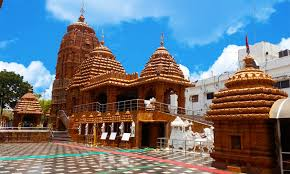

Jagannath Temple
Jagannath Temple in Hyderabad is a modern temple built by the Odia community of the city, dedicated to the Hindu God Jagannath. The temple is famous for its annual Rath Yatra festival which is attended by thousands of devotees.
Location: Banjara Hills, Hyderabad, Telangana, India
Ticket Price: Free entry
Transportation: Accessible by road, well-connected by local buses and taxis.